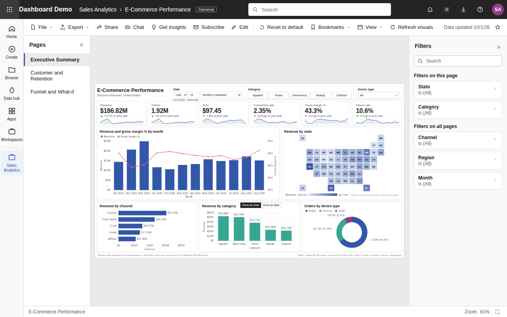
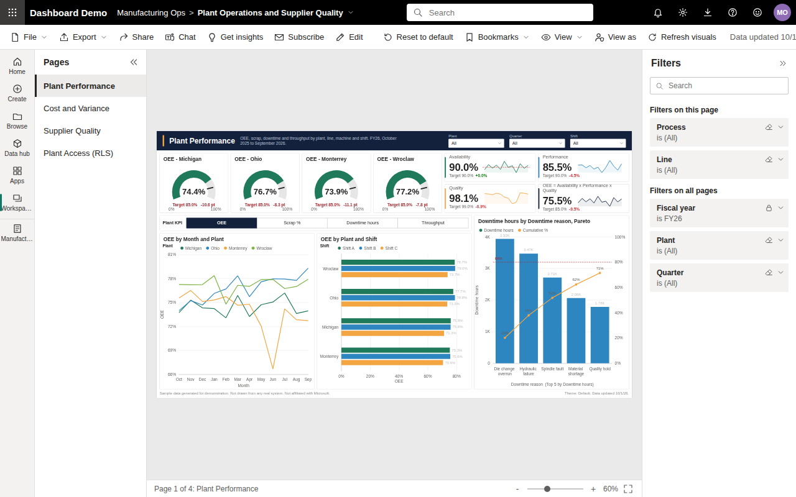
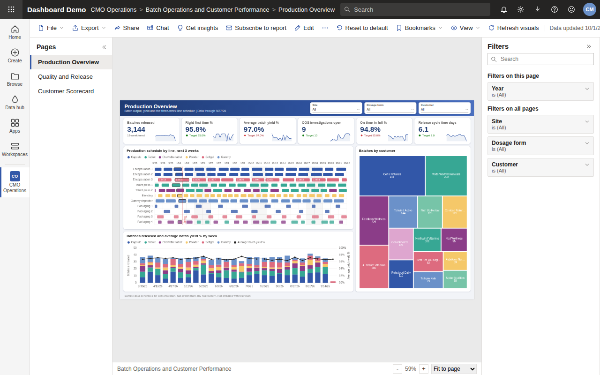
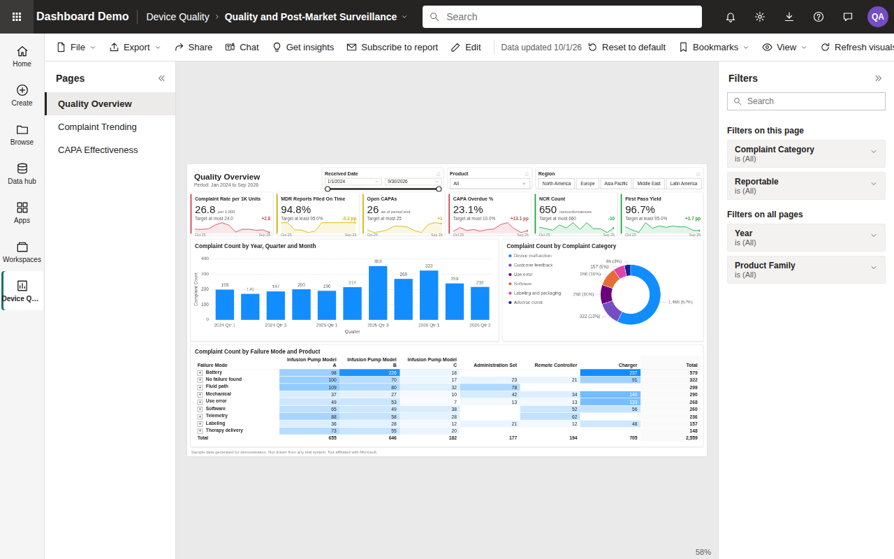

pbi-portfolio
Four browser dashboards that reproduce Power BI report features in plain JavaScript and ECharts: slicers, cross-filtering, drillthrough, bookmarks, report page tooltips and a row-level security preview. Every row of data is generated from a seeded pseudo-random generator and describes fictional organizations. The pages are static files with no build step. Not affiliated with Microsoft.
- Repository
- darblinko/pbi-portfolio
- Data revision
713a321- Generated
- 2026-10-28
- License
- Apache-2.0
Dashboards
Each dashboard opens in the browser with its report pages, filters pane and bookmarks. Click a visual to cross-filter the page. Open the visual header menu for focus mode, show as table, CSV export, spotlight and View DAX. In the auto parts, supplement and device dashboards, right-click a data point to drill through.
Online retailer
E-commerce sales, Oct 2023 to Sep 2026. Pages: Executive Summary, Customer and Retention, Funnel and What-if, plus a hidden report page tooltip for the state tile map. Reproduces the tile map, a cohort retention matrix, key influencers and top segments, a conversion funnel, a what-if parameter, a Q&A visual and Get insights.

Auto parts supplier
Four plants, Oct 2025 to Sep 2026. Pages: Plant Performance, Cost and Variance, Supplier Quality, Plant Access (RLS), plus a hidden Machine Detail drillthrough page. Reproduces a gauge, a field parameter, a Pareto chart, a waterfall, a ribbon chart, a matrix, a scatter chart with a play axis, and View as for four security roles.

Supplement manufacturer
Contract manufacturing of dietary supplements over 90 weeks from 6 Jan 2025. Pages: Production Overview, Quality and Release, Customer Scorecard, plus a hidden Batch Record drillthrough page. Reproduces a Gantt schedule, a treemap, a forecast with anomaly detection, a smart narrative, small multiples and a batch genealogy view.

Device quality
Post-market surveillance for a fictional infusion pump family, Jan 2024 to Sep 2026. Pages: Quality Overview, Complaint Trending, CAPA Effectiveness, plus a hidden Complaint Detail drillthrough page. Reproduces an individuals control chart, a reportability funnel, a 30-day MDR clock, a decomposition tree and a smart narrative.

Problem
A Power BI report opens in Power BI Desktop or the Power BI service, and reports built on employer or client data stay inside that organization. These pages show the same report interactions in any browser, on fictional data.
The data carries planted signals for the reports to find. In the device data, Infusion Pump Model B receives
34, 72 and 41 extra premature depletion complaints in July, August and September 2025, and the Charger
receives 31 and 24 extra charging failure complaints in Europe in February and March 2026. Bookmarks in
docs/device-quality/bookmarks.js open views of both.
How it works
Each dashboard is one HTML page and a set of classic scripts. data.js builds the dimension and
fact tables from a fixed seed. model.js holds the fields, the filter context function and the
measures. The page and visual scripts render ECharts charts and HTML tables from the measures. Interactions
update a report state object, and bookmarks save and restore it.
flowchart LR
seed[Seed literal] --> data[data.js: PRNG builds tables]
data --> model[model.js: fields, filter context, measures]
state[Report state: slicers, selection, drill, bookmark, role] --> model
model --> visuals[Page scripts: ECharts and HTML tables]
visuals -- click, select, drill --> state
Generated data
Row counts and series below are computed by running each data.js in Node.js. They describe the
fictional data the pages render. They are not measurements of a real system.
Run it
-
git clone https://github.com/darblinko/pbi-portfolio cd pbi-portfolio -
python3 -m http.server 8000 --directory docs - Open
http://127.0.0.1:8000/and pick a dashboard. -
npm ci npm run lint npm test npx playwright install chromium npm run smoke
Limitations
- All data is fictional. Company, supplier and customer names are fictional; product names and specification limits are invented.
- Measures are JavaScript functions. View DAX shows equivalent DAX text; nothing parses or evaluates DAX.
- The Q&A visual matches a fixed grammar of measure, dimension, Top N and filter phrases.
- Service actions such as Share, Subscribe and Edit show a notice that they are not available.
- The report canvas is laid out for a desktop browser window and scales down; there is no mobile layout.
- ECharts loads from a CDN, so the pages do not render charts offline.